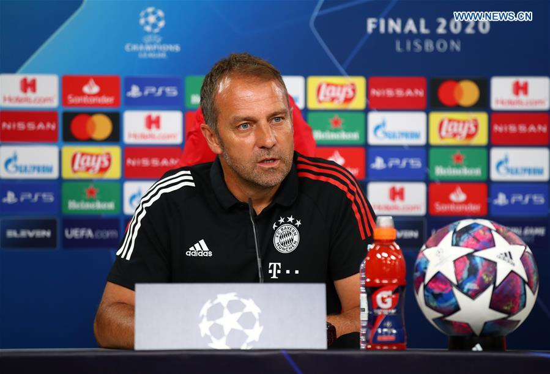

FC Bayern München bemutatása

Vezetőség
- Edző: Hans-Dieter Flick
- Elnök: Karl Hopfner
- Sportigazgató: Matthias Sammer
- Gazdasági társoság elnöke: Karl-Heinz Rummenigge
A játékos keret
- Neuer
- Hoffman
- Nübel
- Schneller
- Alaba
- Arrey-Mbi
- Boateng
- Hernandez
- Pavard
- Sarr
- Süle
- Choupo-Moting
- Davies
- Douglas Costa
- Goretzka
- Javi Martinez
- Kimmich
- Marc-Roca
- Musiala
- Richards
- Sané
- Tillman
- Tolisso
- Zirkzee
- Coman
- Gnabry
- Lewandowsky
- Müller
Csapatkapitányok
- Werner Olk
- Franz Beckenbauer
- Sepp Maier
- Gerd Müller
- Hans-Georg Schwarzenbeck
- Paul Breitner
- Karl-Heinz Rummenigge
- Klaus Augenthaler
- Raimond Aumann
- Lothar Matthäus
- Thomas Helmer
- Stefan Effenberg
- Oliver Kahn
- Mark van Bommel
- Philipp Lahm
- Manuel Neuer
Ha további kérdésed van írj!